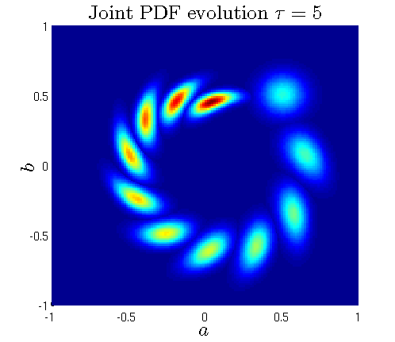
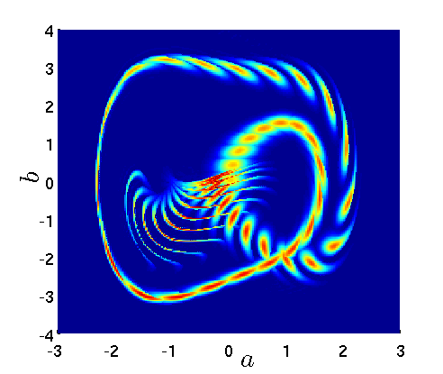
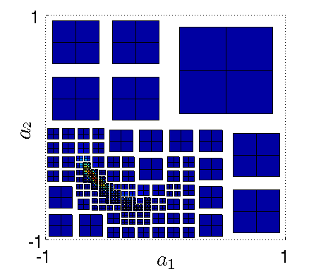

Research
My research interest is in numerical methods for uncertainty quantification and computational biology. I have been developing numerical methods for probability density functions (PDFs) and studied various systems with this approach from stochastic dynamical system to nonlinear PDEs that generates random shocks. I am also working on series expansion methods to represent multi-correlated random processes and also on multiple decomposed domains while preserving the global statistical structure. My recent work includes adaptive reduced basis method for anisotropic stochastic PDEs and modeling cancer growth and resistance dynamics.



Research Interests
Mathematical and Computational Biology, Cancer modeling
Stochastic modeling and Uncertainty Quantification
Computational methods for high-dimensional stochastic systems
Multi-scale modeling and simulations
Numerical PDE and High-performance computing
Ongoing work
H. Cho, D. Levy, ‘Efficient numerical method for high-dimensional phenotypic structed models‘
H. Cho, D. Levy ‘Drug induced resistance and therapy optimization using single-cell RNA sequencing data’
H. Cho, K. Lee, B. Sousedik, ‘Dual-primal domain decomposition
method with augmented Lagrangian for stochastic PDEs’
H. Cho, ‘Modeling spatial and phenotypic heterogeneity in EMT of cancer metastasis’
H. Cho, R. Rockne, ‘Comparison of continuum models of Hematopoetic stem cell differentiation’
H. Cho, ‘Tensor Train method for response-excitation PDF equations, Malakhov-Saichev equation’
Preprint
E. Kim, R. Schenck, J. West, W. Cross, V. Harris, J. McKenna, H. Cho, E. Coker, S. L-Kramer, K. Tsai, E. Flores, C. D. Gatenbee ‘Targeting the Untargetable: Predicting Pramlintide Resistance Using a Neural Network Based Cellular Automata’ bioRxiv, https://doi.org/10.1101/211383
H. Cho, D. Levy, 'The Impact of Competition Between Cancer
Cells and Healthy Cells on Optimal Drug Delivery',
https://arxiv.org/abs/1806.07477, submitted, 2018
Publications
Book Chapters
H. Cho, D. Venturi, G. E. Karniadakis, ‘Numerical methods for high-dimensional kinetic equations’, SEMA
SIMAI Springer Series, Uncertainty Quantification for Hyperbolic and
Kinetic Equations, 2017
D. Venturi, H. Cho, G. E. Karniadakis, ‘Mori-Zwanzig approach to uncertainty quantification’, Springer,
Handbook on Uncertainty Quantification, 2017
Theses
H. Cho, ‘High-Dimensional
Response-Excitation PDF Methods for Uncertainty Quantification and
Stochastic Modeling’, Brown University (Ph.D. 2015), Advisor: Professor
G. E. Karniadakis. PDF
H. Cho, ‘Implementation of Dual Iterative Substructuring
methods on a Parallel computer’, KAIST (MS 2009), Advisor: Professor
C-O, Lee. PDF